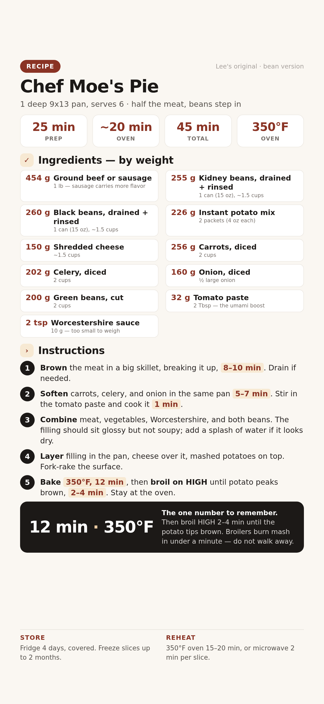

A cottage pie that swaps half the meat for a 50/50 mix of red kidney and black beans. Sausage carries the flavor, tomato paste brings the depth, and the whole thing bakes in one 9x13 pan.

📱 For your phone — tap to open the full-size card, then save it to Photos.
Swapping a pound of meat for beans works, but beans are mild. They take on the flavor around them instead of adding their own, so the remaining pound of meat becomes the whole flavor engine. Three changes keep the pie from tasting flat:
For one 9x13 pan, serves 6. Grams lead; volume in the small line.
Weigh if you can. Set the bowl on the scale, tare between ingredients, go by grams.
Get a big skillet hot. Brown the 454 g (1 lb) meat, breaking it up as it cooks, 8–10 min. Drain excess fat only if there's a lot; with sausage you want some left behind.
What to expect: dark brown bits stuck to the pan. That's flavor. Don't wash them out.
Add the 256 g (2 cups) carrots, 202 g (2 cups) celery, and 160 g (½ large) onion to the same pan. Cook 5–7 min, stirring now and then.
Stir in 32 g (2 Tbsp) tomato paste and 2 tsp Worcestershire. Cook the paste for 1 min, pressing it into the hot pan.
Why: raw tomato paste tastes metallic. One minute in the hot pan turns it sweet and deep.
Stir in both beans — 255 g kidney and 260 g black, drained and rinsed. Fold gently so they keep their shape.
Don't mash them. Stirred roughly, the black beans break down and turn the filling gray and pasty. Fold, don't whip.
What to expect: the filling should look glossy and hold together, not swim in liquid. Too dry? Splash of broth or bean-can liquid. Too wet? Simmer 2–3 min uncovered.
Tip the filling into the 9x13 dish and spread it flat. Scatter 150 g (~1.5 cups) shredded cheese over the filling. Spread the mashed potatoes (from the 226 g / 2 packets of instant mix) on top, then rake the surface with a fork so there are peaks.
What to expect: the peaks are what catch the broiler's heat and brown. A flat top browns flat.
Bake at 350°F for 12 min, then switch to broil on HIGH until the potato tips start to brown, 2–4 min.
Stay at the oven. Broilers brown mash in under a minute and burn it in two. Watch through the door, rack in the upper position.
Let the pie sit 10 min before cutting. The filling sets as it cools, so slices hold their shape instead of slumping on the plate.
They were stirred too hard or simmered too long. Next time, fold them in at the very end, after the filling is already built, and skip simmering.
The meat wasn't seasoned enough to carry it. Add 1 tsp more Worcestershire and a good pinch of salt, or use sausage next time instead of lean beef.
The surface was raked flat or the rack was too low. Fork up real peaks and put the dish on the top rack before broiling.
The broiler was left unattended past the 2–4 min window. Broil with the door open a crack so you can see the color change in real time.
The beans or veg released liquid in the bake. Simmer the filling 2–3 min before assembling, or sprinkle 1 Tbsp flour in while it simmers.
It slid under the potato layer. Sprinkle the cheese on the filling and press it lightly with the back of a spoon so it clings before the potatoes go on.